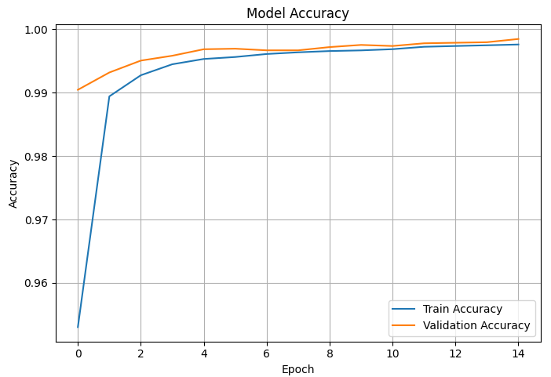
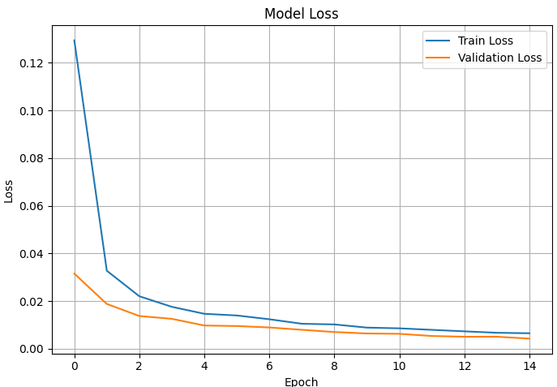
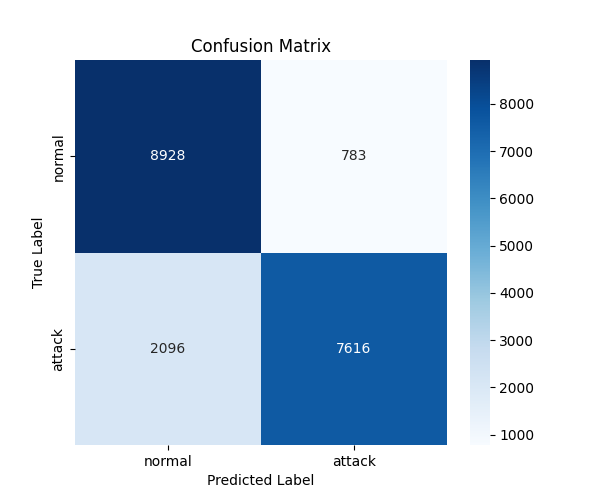
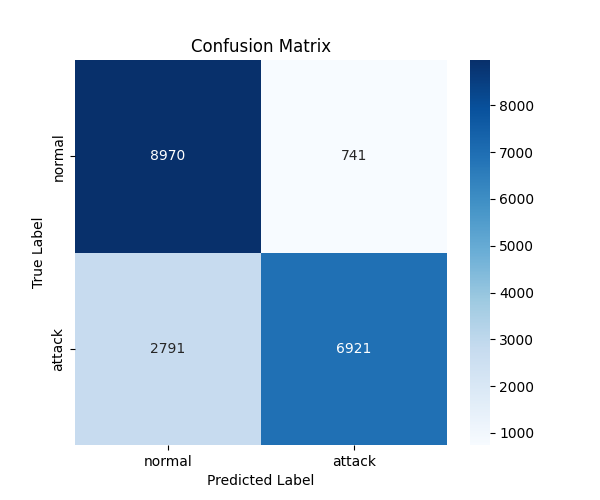

← All projects
Adversarial Attack on ML
Coder, Tester, Data Analyzer & Researcher · 2025
PythonsklearnTensorFlowCoder, Tester, Data Analyzer & Researcher · 2025
PythonsklearnTensorFlowMachine learning firewalls and intrusion detection systems learn to block malicious network traffic from labelled examples, which makes their training data a target. This project studies data poisoning, where an attacker injects or manipulates training records to corrupt what the model learns. Using the NSL-KDD network traffic benchmark, we trained binary classifiers (normal vs. attack) on balanced data, then compared a clean model against models trained on poisoned data using three strategies: attack hiding, DoS poisoning and random label flipping.
I worked on this as part of a team. I wrote the code that prepares the data before training: poisoning it with the attack strategies, randomly flipping labels, and balancing the normal and attack classes so the models weren't biased toward the majority class. I also tested how the models performed on clean and poisoned data, analyzed the results across the different attacks, and researched how data poisoning works and how it affects detection systems.





2025 · 4 pages
A study of how data poisoning attacks affect the accuracy of machine learning intrusion detection systems.